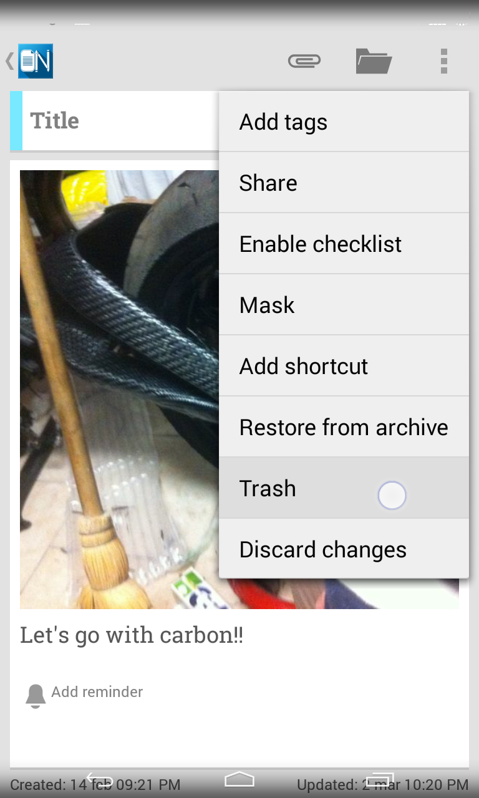
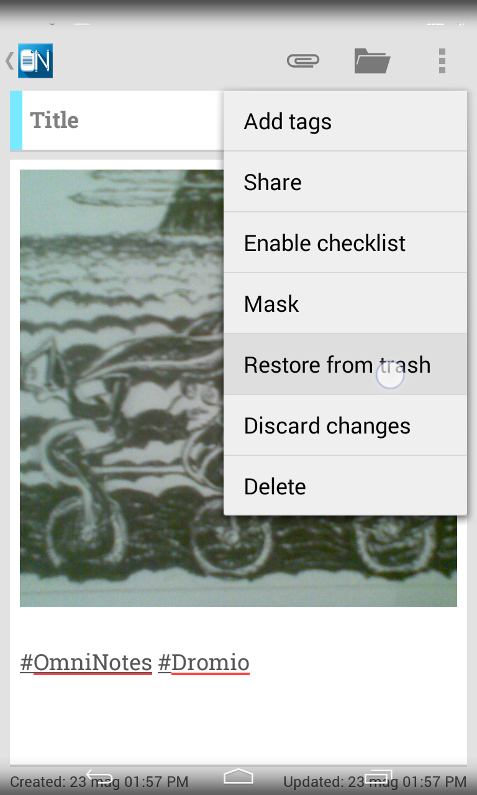

Omni Notes Help Online
Table Of Contents
Note can simply added from the list screen by using the " +" actionbar button or directly from inside the note editor by horizontally swiping from the borders of the screen in direction of the center.
Notes can be archived by swiping with finger notes from list when in "Notes" navigation. This behavior can be changed from settings to "directly trash note by swiping it".
To archive multiple notes at the same time long-press the first, then choose the others, and finally use the menu to select the archive action.
The trash can be used to keep notes that you don't need anymore but that you still don't want to delete.
Search will not find them unless you specifically search from inside Trash itself.
Notes can be trashed by swiping with finger notes from list when in "Archive" navigation or directly from "Notes" navigation if you changed the standard behavior using settings.
To trash multiple notes at the same time long-press the first, then choose the others, and finally use the menu to select the trash action.

When you are sure you don't need anymore some previously trashed notes and/or want to free some space on device you can permanently delete them.
Notes can be deleted by long-pressing the first, then choosing the others, and finally using the menu to select the delete action. This can't be undone, so, you'll be prompted for confirm.
You can create how many colored categories you want to organize your notes. They'll all be listed into the side panel, on bottom of the standard navigation items.
To create a new category simply use the action item that appears on title bar when side panel is opened.
Long-clicking on them is also possible to modify previously created categories editing their name or color or to delete them.
>To associate notes with categories you can both do it from the notes list or directly from inside note editor by pressing the action item on title bar.
Tag
A finer notes categorization can be achieved adding hashtags to notes.
To create a new tag simply add an hash character (#) followed by an unspaced phrase somewhere into the notes. It's possible to add more of them.
After the note is saved the tags will become links and by double-clicking on them all the other notes containing the same hashtag will be searched.
Also the standard search allows to search by tag simply using the apposite action. This will show up a dialog with all the available hashtags.
Attachments